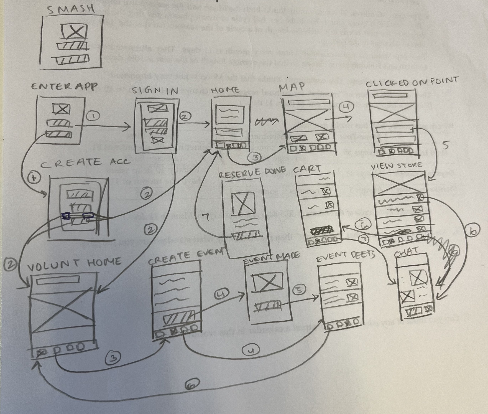
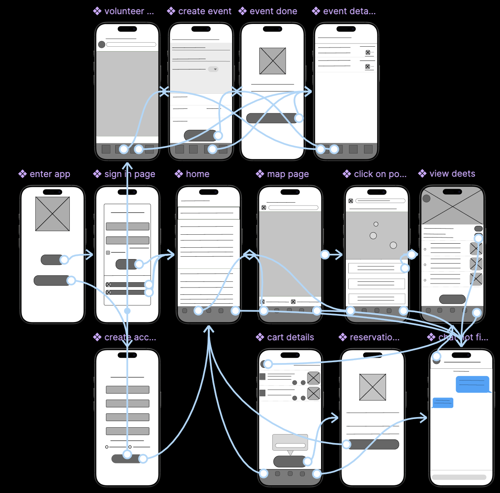
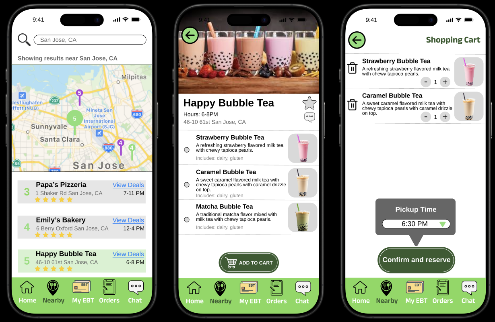

An app that helps low income communities access and afford healthy and nutritional foods.
January-May 2025
Figma, Canva, Miro, Google Form
UX/UI Designer, UX Researcher
Low income population
For class, we had to choose a minority population to create, design, and research an app or website for. We chose the low income population as growing up in Queens, NY, I resonated with this community and witnessed the problems firsthand. Of the many struggles this population faces, I chose food insecurity as it affects millions of people: even in places where food waste is common. Every day, restaurants, grocery stores, and other businesses throw away large amounts of edible food, while nearby individuals and families go without nutritious meals. This stark imbalance reveals a deeper issue—not a lack of food, but a failure in distribution.
During times of crisis, such as economic downturns or public health emergencies, the impact of food insecurity becomes even more severe. Vulnerable populations face greater challenges, from reduced income to limited access to support services. In these moments, the strength and connectedness of a community become especially important.
The platform is designed to reduce food waste and fight food insecurity by connecting restaurants and food businesses with individuals in need. It enables the donation or discounted sale of leftover meals, making surplus food accessible to low-income community members. With a simple interface and location-based features, users can quickly find nearby food offerings or share excess meals with others. By encouraging collaboration between businesses and the community, the platform strengthens local support networks and ensures good food doesn't go to waste.
The people who will be using our design are low income individuals who struggle to afford nutritional food comfortably. Among the potential stakeholders, we will pursue food business/restaurant owners to join our program. Our goal is to persuade and gather business owners who are willing to and are interested in reducing food waste, while supporting the low income community. Local business owners of neighborhoods and cities with a high rate of poverty and low income families would be preferable. Another stakeholder we are planning to pursue is the government. To be able to have the feature in our design where our users can access their food stamps (EBT) through their mobile phone, the government is an essential stakeholder as they are in charge of these government funded food assistance programs. Another stakeholder we plan to pursue are people who are willing to donate food in or near these local communities. These individuals are fortunate enough to have access to healthy foods and live financially comfortable. We can target those who enjoy volunteering at local food banks or who have donated food previously.
To understand the needs and preferances that the app would require for our target population, I conducted user research. Qualitative, moderated, in-person testing would be the best for my project. Since I’m aiming to understand user behavior, identify pain points in their experiences when using our app/website, and improve the overall user experience: observing participants as they interact with the product while asking questions will offer the most valuable insights for the project. Qualitative data will help uncover specific problems users face and why they occur, which is especially helpful during the mid-stage of the project, where there’s still flexibility to make design changes unlike at the end stages where it’s difficult to make great design changes. A moderated approach also helps me gather deeper context and clarify participant responses. Conducting surveys to our major users asking questions about their needs, preferences, and barriers would be one of our research methods. The questions focus on their food access challenges, smartphone/internet usage, and comfort with digital platforms. Another survey would be sent out to local food business owners about their needs, preferences, and concerns. The questions would include how comfortable they are with their customers, how much food is wasted weekly, and how likely they are to participate in company collaborations or programs. I would also conduct design ethnography to gain a comprehensive and empathetic understanding of their struggle with this problem and to capture real-life behaviors and social interactions that may not be revealed in surveys or interviews. 3-5 participants would work for this method. I would interview individuals of both the low income population and food business population for 5-20 minutes each. For the low income users, the interview will focus on their experiences with food insecurity, tech accessibility, and willingness to use a digital platform for food access. On the other hand, the interview with food business owners would have questions about their willingness to join programs and what they think about businesses that give food away for free. Our primary research method will be contextual inquiry, focusing on observing how low income individuals navigate food access in their daily lives. We will shadow participants in activities such as visiting grocery stores, food banks, or local restaurants to understand their purchasing decisions, problems in affordability, and overall food accessibility. During these observations, we will pay close attention to their interactions with vendors, methods of payment (including their EBT usage), and any other challenges they encounter like digital literacy problems when using online food resources. We will also observe their smartphone and computer usage to assess their familiarity with digital platforms, which will inform the usability of our design.
I focused my design on three major tasks after doing a task analaysis: finding a participating location near the user's current location, message a food provider to ask about food availability, and organize a community food-sharing event through the app. Due to having two different focus users in my task analaysis, I had two different paths/designs for the app: one for customers, one for volunteers. I began by creating a sitemap to define the app’s structure and streamline user navigation. From there, I created paper wireframes to explore initial ideas, which were then translated into digital wireframes that clarified layout and core functionality. Using these wireframes, I built a low-fidelity prototype to enable early user interaction and gather preliminary feedback. I then conducted usability studies to test the design and uncover insights, ensuring the app effectively supports users seeking affordable, nutritious food.
I focused my design on three major tasks as well as the information I gained from conducting user research. I used pencil and paper to sketch the low-fidelity wireframes out.
The main objective was to design a clear and intuitive interface that improves the overall user experience. By focusing on simplicity and ease of use, the design enables efficient navigation, allowing users to complete tasks quickly and with minimal effort.
After usibility study, I added many details that I did not include in my low-fidelity designs. I added a favorite function where users can favorite certain restaurants. I also added a rating function where users can see the rating of each restaurant based on the other users' expereinces. For the chat function, I added a time stamp for the comfortability and efficiency for customers and business owners. Due to many of the low income population consisting of immigrants who are not 100% comfortable with English, I added a "switch language" function when the user enters the app, which users can click and choose the language they are fluent in.
This project was my first experience working in UX and UI design, allowing me to engage with every stage of the process. I gained valuable knowledge in areas such as user research, usability testing, and iterative design, which greatly expanded my understanding of human-centered design principles.
Beyond the technical learning, the project was personally meaningful, as it was inspired by challenges faced by people in my hometown of Queens, NY. This experience highlighted the importance of designing solutions that address real community needs, reinforcing my commitment to creating impactful, empathetic, and problem-focused designs.